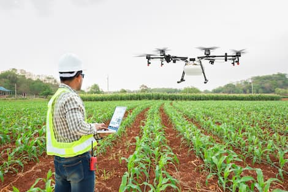

Função
Originados nos Estados Unidos da Amèrica, o drone atua nas àreas de: Infraestrutura, Transporte, Segurança e Agricultura. Na agricultura, os drones são utilizados para monitorar o desinvolvimento da lavoura com uma maior precisão, provendo suas necessidades, e fazendo com que se tenha uma produtividade maior. Os drones podem promover as seguintes atividades: Detecção de falhas de plantio, contagem das plantas, identificação de pragas e pulverização.